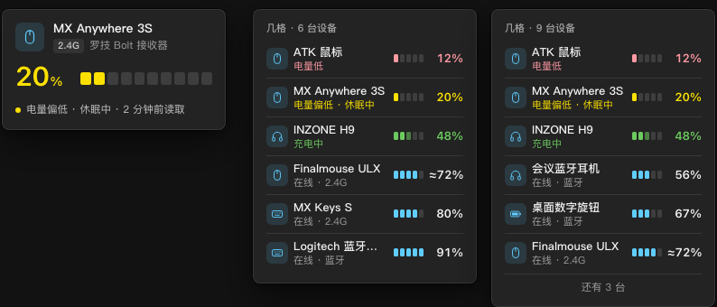
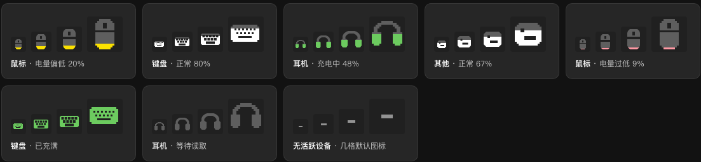
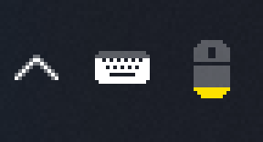

任务栏直读条（Windows 11）
在通知区左侧直接横排显示设备图标和电量百分比，字高与时钟一致。低电量变红，充电时变绿带闪电；全屏或任务栏自动隐藏时跟着收起。
还剩几格电，一眼就知道
在 Windows 任务栏直接查看无线鼠标、键盘和耳机的剩余电量。不用一直开着厂商驱动，电量低时提醒充电，打游戏时不打扰。
以下来自几格的界面原型，应用按它绘制。设备名和电量是演示数据。



日常只管看电量，其他时候安静待在角落。
在通知区左侧直接横排显示设备图标和电量百分比，字高与时钟一致。低电量变红，充电时变绿带闪电；全屏或任务栏自动隐藏时跟着收起。
在 Windows 10 上、任务栏空间不够，或你在设置里手动切换时，改用设备剪影显示电量。剩余电量越多，颜色从底部填得越高，未填部分为灰色。
鼠标移到图标上弹出悬停卡片，显示设备名称、连接方式和读取时间。点一下打开主面板，电量最低的设备排在最上面，改名、筛选和设置都在里面完成。
设备在线、未充电且连续两次查询不高于提醒阈值（10%～30%）时提醒充电。可以点「知道了」或「1 小时后提醒」，只在桌面出现。
全屏或演示模式下查询间隔延长到 5 分钟并推迟提醒；开启「游戏中不打扰」后，无边框全屏和指定游戏进程也同样静默。你主动操作时照常响应。
只发白名单里的电量与状态查询，不修改设备参数，也不记录键鼠输入。诊断报告只在你主动导出时生成并留在本地，先用记事本打开给你核对。
平时不在后台联网，也不会弹窗催更。只有你点「检查更新」时才会查新版本：默认优先走国内镜像，失败自动改用 GitHub，核对大小和 SHA-256 后原地升级并保留设置。
多数设备经 2.4 GHz USB 接收器读取，也支持 Windows 蓝牙电量。「已实机验证」表示已在真机确认；「仅按资料」表示按公开协议实现，欢迎反馈。
INZONE H9 一代（Windows 11 实机确认）
使用 PC 档 USB 接收器读取；检测到 INZONE Hub 运行时会自动退让，不抢占设备。
HTX Ultra 8K（Windows 11 实机确认）
按官方型号表同步覆盖同家族（Fenrir Pro 8K、HTM Plus、HSK Pro 2.0 8K，同家族推定）及 21 款旧协议型号。
支持 UltralightX（ULX）2.4 GHz 接收器，以及同家族接收器通用识别。
支持 F1 Ultimate、ATK ZERO 及多款共用接收器，也支持同家族未收录接收器通用识别。
支持 Bolt、Unifying、Nano、LIGHTSPEED 接收器与部分 USB / 蓝牙鼠键，以及 G533、G535、G733、G935、G PRO X Wireless / 2、ASTRO A50 Gen 5 等耳机。MX Keys S、MX Anywhere 3S 已通过 Bolt 在 Windows 10 日常使用。
覆盖 72 款鼠标与 15 款键盘（含普通接收器、HyperPolling 接收器与 USB-C 充电模式），以及 BlackShark V2 Pro (2020) 与 V2 HyperSpeed 耳机。
直接读取 Windows 提供电量的各品牌蓝牙鼠标、键盘和耳机。可在设置里关闭显示，同一台罗技蓝牙设备会自动合并，不会重复出现。
当前正式版更新内容。
安装包暂未做代码签名，首次运行时系统可能会拦截提示。点弹窗里的「更多信息」，再点「仍要运行」即可继续安装。
如果不放心，可以先下载页首的 SHA256SUMS.txt，在 PowerShell 里核对安装包散列值是否一致。
Windows 10 的任务栏结构与 Windows 11 不同，几格在 Windows 10 上会自动改用托盘水位图标显示电量，悬停卡片、主面板和低电量提醒都可以正常使用。
不用。几格适合在厂商软件里把设备调好以后、平时关闭官方驱动的用户。官方软件运行时可能会抢占接收器；遇到占用时，几格会自动退让并保留上次读数。
不会。几格平时不联网，只在你主动点「检查更新」时获取新版本信息。诊断报告也只在你主动导出时生成，保存在本机并先用记事本打开给你检查，不含序列号、电脑名、用户名或键鼠输入。
装好之后不用再回官网手动下载。在几格里点「检查更新」，程序会自动核对文件大小和 SHA-256 校验值，通过后静默升级并重启，设置和设备记录都会保留。